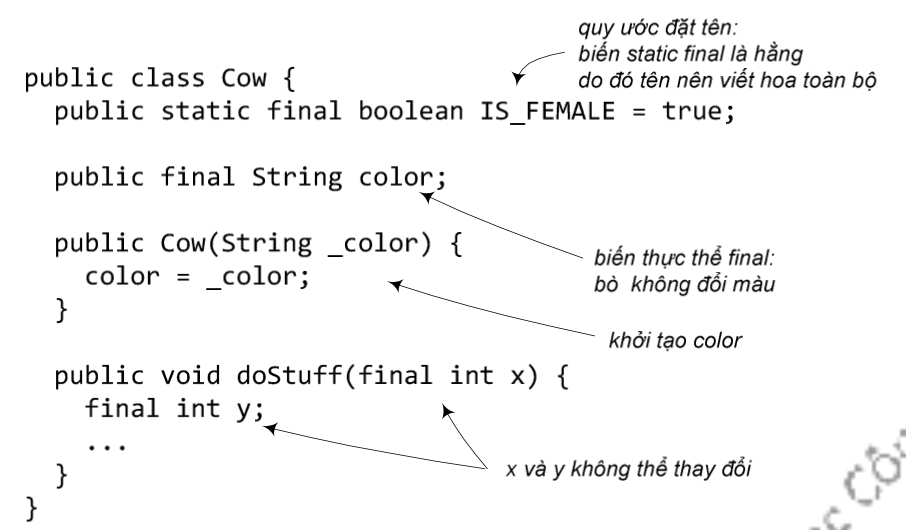

Trong ngôn ngữ Java, từ khóa final mang nghĩa "không thể thay đổi". Ta có thể dùng từ khóa này để quy định về tính chất không thể thay đổi cho biến, phương thức, và cả lớp:
Nói cách khác, biến final là hằng. Ta có biến static final là hằng của lớp, biến thực thể final là hằng của đối tượng. Biến địa phương, tham số cũng có thể được quy định là final. Trong ví dụ sau đây, 'cow' có nghĩa là 'bò cái' nên IS_FEMALE (là giống cái) là hằng mang giá trị true chung cho tất cả các đối tượng kiểu Cow, từng con bò không đổi màu nên color là một hằng cho từng đối tượng Cow.
An toàn là lí do cho việc khai báo final. Ví dụ, nếu có ai đó viết lớp con của String và cài đè các phương thức, người ta có thể nhờ đa hình mà dùng các đối tượng thuộc lớp mới này cho các đoạn mã chương trình vốn được viết cho String. Đây là tình huống không được mong muốn, do đó String được đặt chế độ final để tránh xảy ra tình huống đó. Nếu ta cần dựa vào cài đặt cụ thể của các phương thức trong một lớp, hãy cho lớp đó ở dạng final. Nếu ta chỉ cần cố định cài đặt của một vài phương thức trong một lớp, ta đặt chế độ final cho các phương thức đó chứ không cần đặt cho cả lớp. Tất nhiên, nếu một lớp là lớp final thì các phương thức trong đó nghiễm nhiên không thể bị cài đè, ta không cần đặt chế độ final cho chúng nữa.